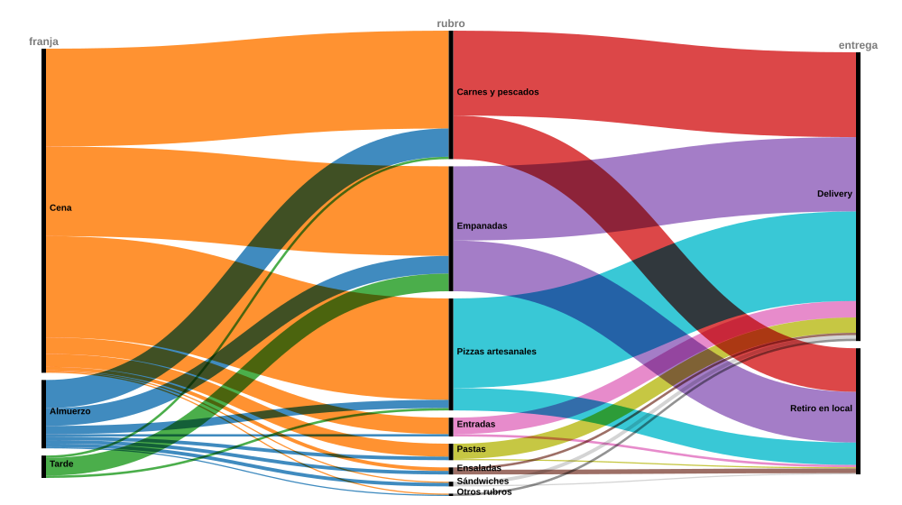

Este proyecto analiza los pedidos de La Percanta, un restaurante de Puerto Madero cuya aplicación de pedidos es un proyecto propio. A partir de los datos de esa base exploro a qué hora pide el barrio, qué pide en cada momento del día, cuánta carta sobra y desde dónde llegan los pedidos de delivery.
Qué estás mirando. Todos los pedidos que entraron por la aplicación web entre el 4 de agosto y el 26 de septiembre de 2026: 124 en total. Los cuatro gráficos usan los 119 que se entregaron, dejando afuera los 5 cancelados: un pedido cancelado no es trabajo hecho ni plata cobrada.
De dónde salen. Son todos reales. Se leyeron de la base de producción de la aplicación con consultas de solo lectura, sin ningún pedido inventado. En el prototipo la muestra estaba completada con pedidos generados porque la aplicación recién arrancaba; con casi dos meses de uso real, la versión final trabaja solo con lo que pasó. El detalle del método está al final de la página.
Datawrapper
Un restaurante no trabaja parejo. Cruzando los siete días de la semana con la hora en que entró cada pedido aparecen dos turnos bien separados: el mediodía, entre las 12 y las 14, y la noche, que arranca cuando la web empieza a tomar los pedidos del delivery de las 20. Entre las 15 y las 17 no entró ni un pedido. El pico es muy marcado: a las 20 horas entraron 50 de los 119 pedidos, y los dos casilleros más oscuros son el sábado y el domingo a esa hora, con 12 cada uno. La columna de la derecha responde la pregunta operativa de fondo, que es qué días sale más trabajo: el sábado saca 26 pedidos y el lunes 9, casi tres veces menos.
RawGraphs
Cada línea es un pedido. Entra por la franja en que se hizo, pasa por el rubro que más facturó dentro de ese pedido y sale por la forma en que se entregó; cuanto más gruesa la cinta, más pedidos hicieron ese mismo recorrido. Lo primero que se ve es el tamaño de la noche: la cena se lleva 90 de los 119 pedidos, y ahí mandan tres rubros casi empatados, empanadas (27), pizzas (24) y carnes y pescados (24). Al mediodía lidera carnes y pescados, con 9 de 22. La tarde es chica y muy particular: sus 7 pedidos son para retirar en el local, y 6 son de empanadas. A la derecha, el delivery se lleva 81 de los 119 pedidos. Las empanadas son el rubro que más se retira por mostrador (15 de 37), y las pastas no se retiraron nunca: sus 8 pedidos salieron todos por delivery.

Flourish
Cada rectángulo es un plato, agrupado por rubro y dimensionado por lo que facturó; se puede tocar un rubro para entrar. Solo aparecen los 71 productos que se vendieron al menos una vez en los 119 pedidos entregados, así que los 286 que nunca se vendieron son literalmente el espacio en blanco del gráfico. Hay rubros enteros que la aplicación no vendió ni una vez: cafetería, panadería y dulces, desayuno y merienda, tablas, y vinos y cervezas. La concentración es brutal: 8 productos, el 2% de la carta, hacen la mitad de la facturación, y una sola empanada, la de carne suave, facturó $710.600: el 14% de todo lo que vendió la aplicación.
Tableau Public
Casi 7 de cada 10 pedidos salen por delivery, y la aplicación guarda la dirección de cada uno. La ubiqué edificio por edificio y armé un tablero de cuatro gráficos que responden la pregunta en dos pasos. Arriba, dos mapas del mismo barrio. El de la izquierda cuenta pedidos: es un mapa de calor donde cada entrega suma calor en su edificio, así que cuanto más rojo, más pedidos salieron a ese punto. El de la derecha cuenta plata: cada edificio es un círculo cuyo tamaño es lo que gastó en total, pintado según su ticket promedio en tres tramos de verde (hasta $30.000, de $30.000 a $45.000 y más de $45.000). En los dos, el cuadrado negro es el local, en Aimé Painé 1607. Abajo, dos barras que explican lo que los mapas dejan adivinar: cómo cambia el ticket con la distancia y de qué edificios viene la plata. El filtro de la derecha separa el almuerzo de la cena en los cuatro gráficos a la vez (a la tarde no hubo ningún delivery).
El mapa de pedidos muestra un barrio chico: la mitad de los deliveries viaja menos de 400 metros en línea recta, 77 de los 81 quedan a menos de un kilómetro y del otro lado de los diques llegaron apenas 3. El de la plata cambia el orden: el edificio que más pide también es el que más gasta ($518.000, el 15% de todo el delivery), pero el tercero en cantidad de pedidos baja al sexto lugar en plata, porque su ticket promedio es de $25.400. Las barras lo explican. Cuanto más lejos, más grande el pedido: los de más de $45.000 pasan del 24% a menos de 200 metros al 41% a más de 400, y el ticket mediano sube de $31.800 a $42.600. Y la plata no depende solo de los clientes fieles: los 18 edificios que pidieron una sola vez, la mitad del mapa, dejaron el 28% de la plata, casi lo mismo que los 3 edificios que pidieron cinco veces o más (29%). Con el filtro en almuerzo hay solo 15 envíos, así que ahí conviene mirar el mapa y no los porcentajes.

Las cuatro preguntas terminan contando lo mismo desde ángulos distintos: lo que se pide por la aplicación es mucho menos variado y mucho más cercano de lo que la carta y la zona de reparto hacen suponer. La carta ofrece 357 productos, pero la mitad de la plata la hacen 8. La cocina abre de 8 a medianoche, pero el trabajo se amontona en una sola hora, las 20. Y el delivery llega a todo Puerto Madero, pero la mitad de los pedidos viaja menos de 400 metros.
Si tuviera que recomendar tres cosas a partir de estos gráficos serían: reforzar cocina y reparto entre las 20 y las 21 de los fines de semana, que es cuando se concentra el trabajo; armar lo que muestra la aplicación alrededor de empanadas, pizzas y carnes, que es lo que de verdad se pide, en lugar de 357 platos con el mismo peso; y promocionar la aplicación en las torres de Puerto Madero Este que ya piden, donde un mismo viaje puede llevar más de un pedido. Ninguna de las tres se veía en la base; se ven en los gráficos.
La aplicación de pedidos de La Percanta está hecha con Next.js y PostgreSQL sobre Supabase. Los datos se extrajeron de la base de producción el 27 de septiembre de 2026, con consultas dentro de transacciones de solo lectura: la base no se modificó.
| Archivo | Filas | Qué contiene |
|---|---|---|
| datos/pedidos.csv | 124 | Un pedido por fila: momento, forma de entrega, rubros que tocó, detalle de lo pedido, montos y demora. 119 entregados y 5 cancelados |
| datos/renglones.csv | 304 | Un producto pedido por fila, con sus modificadores (guarnición, tamaño, corte) |
| datos/carta.csv | 357 | La carta completa del local, con códigos y precios |
Sobre el universo. Los cuatro gráficos usan los 119 pedidos entregados. Todos entraron por la aplicación web: los pedidos por teléfono y los del salón no pasan por ella, así que estos datos hablan de lo que se pide por la aplicación y no de todo el restaurante. Las horas son de Buenos Aires, y las franjas siguen el horario del servicio: almuerzo hasta las 16, tarde de 16 a 19:30 y cena desde las 19:30, que es cuando la web empieza a tomar los pedidos del delivery de la noche.
Sobre los rubros. La carta tiene una categoría «Recomendados» que no es un rubro sino una vidriera: son diez platos destacados que ya pertenecen a su rubro real, y cada uno se cuenta en el suyo. El diagrama aluvial le da nombre propio a todo rubro que fue el principal de tres pedidos o más; los 5 pedidos restantes van a «Otros rubros». En el treemap, las pizzas mitad y mitad reparten su facturación en partes iguales entre los dos sabores, por eso algunas pizzas muestran medias unidades.
Sobre los mapas. Las direcciones se ubicaron con el normalizador de direcciones del Gobierno de la Ciudad (USIG), enviando solo la calle y la altura. Una altura que el callejero oficial no tiene (Juana Manso 1965) se ubicó en la última altura válida de esa calle. En el mapa, los tres tramos de gasto se aplican al ticket promedio de cada edificio; en las barras de distancia, a cada pedido. Los dos se recalculan con el filtro de franja. Las distancias son en línea recta desde el local, y la frecuencia de cada edificio cuenta sus pedidos en todo el período.
Sobre las personas. No se publicó ningún dato personal. Los clientes aparecen como códigos (C01, C02…) asignados de forma estable; no hay nombres, teléfonos, correos ni departamentos en ninguno de los archivos. El dataset del mapa tiene un punto por pedido a nivel de edificio, sin el número de pedido ni la dirección, así que no se puede cruzar con lo que se pidió (Ley 25.326).